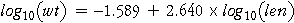
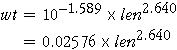

Interpreting and Using the Model
How do we use a model relating log(weight) to log(length)? In order to interpret the coefficients, the model must be transformed back to an equation that expresses weight in terms of length.
The following output is produced by Minitab when asked to perform a regression of a column containing log(weight) against another column containing log(length), after deleting the outlier from the data set.
|
The regression equation is logWt = - 1.59 + 2.64 logLen Predictor Coef Stdev t-ratio p Constant -1.58906 0.03058 -51.97 0.000 logLen 2.64043 0.05017 52.63 0.000 |
The least squares equation is therefore

or equivalently,

The diagram below shows a scatterplot of log(weight) against log(length) and a scatterplot of weight against length. The least squares line (based on the transformed variables) is drawn on both scatterplots.
Click anywhere on either scatterplot. The equations on the bottom right show how log(weight) is predicted from log(length) using the least squares equation; the predicted weight is 10 raised to this power.
Choose Use original scale from the popup menu. The equations now show how this predicted weight may be obtained directly from the length using the rewritten equation.